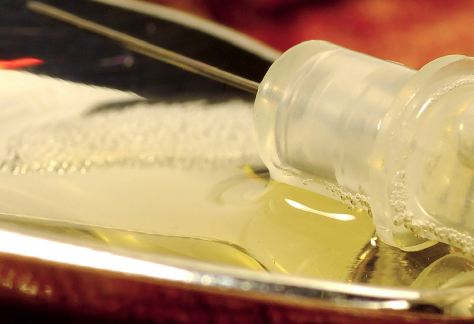

Syringe Exchange Programs
Enabling addiction or saving lives?
Julie Rwan
Spring 2007

Somewhere in the United States, at this very moment, a junkie is
choosing from a buffet of drug paraphernalia: insulin needles of
various gauges, muscling needles, retractable needles, tin cookers,
cotton filters, tourniquets, and much more. But this transaction is not
taking place in a dark alley nor is the supplier a shifty-eyed dealer.
Instead, it is part of a local government-sanctioned syringe exchange
program (SEP), most likely taking place in a brightly lit room staffed
by public health professionals.
In December 2005, the Centers for Disease Control
and Prevention (CDC) broadcasted that SEP programs can effectively
reduce the transmission of Human Immunodeficiency Virus (HIV) and other
blood-borne infectious diseases. Since one-fifth of HIV and hepatitis C
infections in the United States are transmitted through injection drug
use, public health officials have quickly suggested SEP as one strategy
to employ in the comprehensive approach to lowering transmission rates.
To understand such abnormally high transmission rates among the
injection drug user community, it is necessary to examine how
blood-borne diseases are transmitted via injection drug use.
Sharing dirty needles can clearly affect an exchange
of blood, which itself can harbor pathogens such as HIV. Dirty needles
are also breeding grounds for bacteria that can cause abscesses,
embolisms, and ultimately amputations of rotten limbs. Also, regardless
of its sterility, repeated injection of a needle into the same location
may result in collapsed veins or bleeding to death.
In the late 1980s, these threats prompted public
health and medical practitioners to establish the first SEPs in Tacoma,
Portland, San Francisco, and New York City. Today, the CDC estimates
that 24 million syringes are exchanged annually by 184 programs in 34
states. These numbers continue to increase as more states institute
exchange programs.
SEP offers unused, sterile needles to any receptive
injection drug user. Some sites offer a comprehensive array of tools to
promote safe and clean injections and educational pamphlets on which
veins to hit and how to care for wounds. A medical professional may
also be on staff to provide testing for HIV and sexually transmitted
infections and care for abscesses, wound botulism, or withdrawal
symptoms. Injection drug users, if willing, can easily be directed to
support groups and detoxification programs to recover from their
addiction.
SEP is part of a broader harm reduction philosophy
that aims to reduce the amount of harm caused by high-risk behaviors,
such as sharing needles. Harm reduction principles work by encouraging
incremental achievement rather than forcing the complete and immediate
elimination of unwanted behavior as favored by abstinence treatment
programs. Perri Franskoviak, PhD, the community programs manager at the
Harm Reduction Training Center in San Francisco, believes that
abstinence programs may inadvertently induce psychological reactance,
or a rebellion against pressure to change behavior. “Human beings hate
being told what to do. If the requirements for obtaining care are too
high, then the client- provider dialogue will devolve into a stale
exchange of clients telling providers what they want to hear as well as
what many of them want to believe,” says Franskoviak.
Although SEP may seem like a novel application of
harm reduction, other applications are quite familiar such as the use
of condoms and nicotine patches. Also, harm reduction is second nature
to practicing preventive medicine. As Franskoviak contests, “Every time
a person is counseled on a low sodium diet to lower blood pressure or
given blood thinners to prevent clots, greater harm is prevented. And
isn’t it interesting that we don’t throw out the non-compliant
hypertensive client from treatment because she can’t stop eating junk
food?”